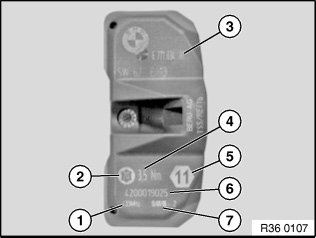
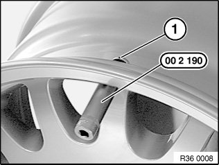
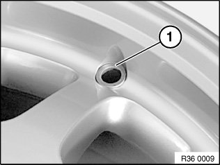
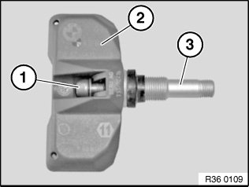
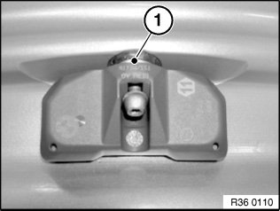
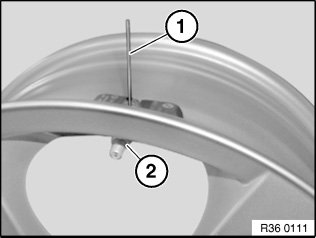
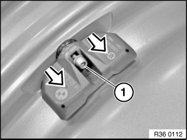
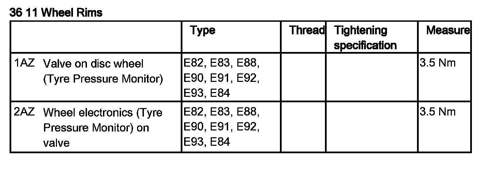

36 11 533 Removing and Installing/Replacing A Tire Pressure Control Electronic Wheel Module (Generation I)
36 11 533 Removing and installing/replacing a tire pressure control electronic wheel module (Generation I)Special tools required:
Important!
Before removing or installing, check which generation of tire pressure control electronic wheel modules are fitted (see BMW Spare Parts Catalogue).
If the electronic wheel module has been removed, the complete valve must be replaced.
These instructions describe how to install the (old) 2-time operating valves. These can be used if still in stock.
1-time operating valves, see repair instruction.
Note:
There are two different electronic wheel modules. The SP303 electronic wheel module must be used with RDC-01 and RDC-02 from model year 03/06.
The Gen3 electronic wheel module must be used with RDC-LC from model year 09/09.
If a tire sealant has been used, replace the electronic wheel module.
When a tire has been removed, do not clean the rim with installed electronic wheel module with high-pressure cleaner.
Before the installation of new wheel electronics with valve, thoroughly clean the valve bore of the wheel rim.
Do not treat electronic wheel module with solvents, cleaning agents etc. If dirty, wipe with a clean cloth only.
Do not clean electronic wheel module with compressed air.
Necessary preliminary tasks:
^ Remove tire

Labelling of electronic wheel modules SP303 RDC-01 and RDC-02
1 Transmission frequency of electronic wheel module
2 Large Torx socket screw
3 BMW part number
4 Tightening torque of Torx screw and union nut
5 Width across flats of union nut
6 Serial number of electronic wheel module
7 Production date of electronic wheel module

Labelling of Gen3 electronic wheel module for RDC-LC
1 Data Matrixcode
2 BMW part number
3 FCC ID = radio authorization
4 Electronic wheel module ID
5 Transmission frequency
6 Pressure sensor
7 Width across flats of union nut
8 Tightening torque
9 Production date of electronic wheel module
Note:
The following graphics show exclusively how to install and remove the SP-303 electronic wheel module. The handling instructions also apply without any differences to the Gen3 electronic wheel module!

Removing electronic wheel module
Release union nut with special tool 00 2 190; if necessary, grip valve insert (1) at cylindrical section of ball head.
Remove valve insert from rim.

Remove washer (1).
Important!
Before the installation of new wheel electronics with valve, thoroughly clean the valve bore of the wheel rim!
Also make sure that the valve bore is free of burrs

Installing electronic wheel module
Insert new Torx socket screw (1) in electronic wheel module (2) and secure firmly.
Twist new valve insert (3) by hand approx. 3 turns onto screw (1).
Note:
Do not tighten screw; electronic wheel module and valve insert must be loosely joined together.

Insert valve insert with electronic wheel module into cleaned valve bore.
Here the radial bore hole (1) for gripping on the circumference of the valve insert ball head must point outwards.

Insert the brace (1) supplied with the valve into the valve insert bore hole.
Fit new washer and screw on new union nut (2) by hand as far as it will go.
Important!
The screw connection must be tightened to the specified torque in one go!
Do not under any circumstances retighten the screw connection!
Remove brace, otherwise it may damage the tire.
Tighten down union nut (2) while using brace (1) to prevent valve insert from turning.
Installation:
Tightening torque 36 11 1AZ.

Important!
The screw connection must be tightened to the specified torque in one go!
Do not under any circumstances retighten the screw connection!
Press electronic wheel module gently into well base and tighten Torx socket screw (1).
Installation:
Tightening torque 36 11 2AZ.
